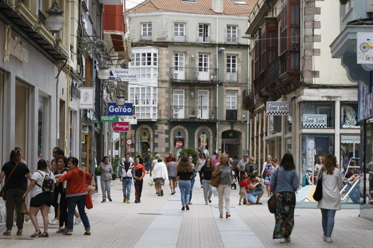

Pablo
Espinosa
<table width="100%" height="100%" border="6">
	<tr>
		<td bgcolor="green"  colspan="2"> 
			<h1>  <center> Torrelavega </h1> 
		</td>
	</tr>
	<tr>
		<td background="torrelavega.jpg" bgcolor="orange" width "100%" height="100%"> 
			<br> <font color="green"> <center>  Enlaces  </center></br></font>
			<br> <a href="tabla1.html"> <center>  Torrelavega  </center></</a> </br>
			<br> <a href="tabla2.html"> <center>  Imagen  </center></</a> </br>
			<br> <a href="tabla3.html"> <center>  Fauna y flora urbanas  </center></</a> </br>
			<br> <a href="tabla.html"> <center>  Inicio  </center></</a> </br>
		</td>	
		<td bgcolor="red"> <width "200"> <center> Torrelavega tiene gran fauna y flora dentro de su terreno. </center> </td>
	</tr>
</table>